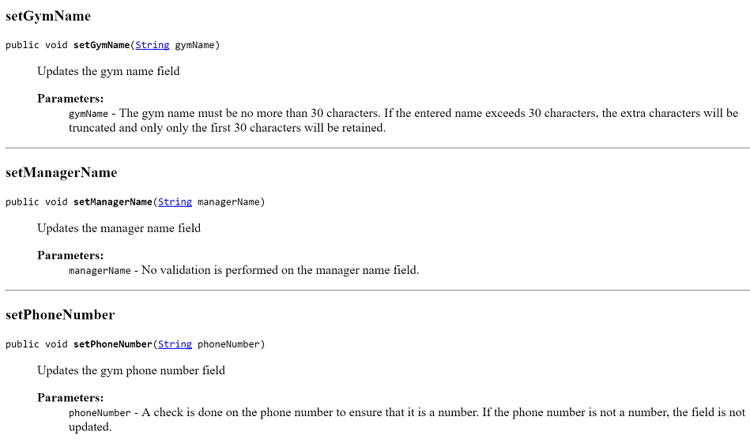

Readme
Assignment 1: This assignment is based on materials contained in the slide decks and labs in the first 4 topics, namely, Introduction to Java programming language, Object Interaction and Grouping Objects. In this assignment, we will combine all these topics into a multi-class gym app.
Similar(ish) Project
In your previous lab, you worked on a Shop project. Your assignment will be similar(ish) to this project but will incorporate more concepts and require you to develop your own algorithms to solve some of the requirements given to you.
The solution to the Shop project can be found here.

The responsibility of the Product class is to manage a single product.
The responsibility of the Store class is to manage an ArrayList of Products.
The Assignment
You are tasked with developing a GymApp.
This GymApp will have three classes:
- Member: The responsibility for this class is to manage a single Member.
- Gym: The responsibility for this class is to manage a collection of members.
- MenuController: The responsibility for this class is to manage the menu, including the user input/ouput.
The instructions for developing the app and the above classes are on the following tabs.
Some key points to remember when coding your assignment
You must use the names given for the Classes and Methods; failure to do so will result in reduced marks.
For all variables, methods and classes used, please adhere to the naming standards discussed in class.
Use internal, helper methods (i.e. private access methods) where appropriate. The interface for your class must match the interface given in the assignment brief. Deviating from the interface will result in reduced marks. Note: the interface here refers to the fields, constructors and methods that are visible outside the class.
Your classes should be Javadoc commented in the same way that the assignment brief has them done.
Member class - overview
In your workspace folder, create a new folder called assignments. Within this folder, create a new folder called assignment 1:
Within this directory, create a new Project and call it GymApp.
Create a new class called Member. The responsibility for this class is to manage a single Member.
Reverse engineer the Member class from the JavaDoc screen shots below and those on the next tab. Note: there is sufficient information in these screen shots to build the class.
Class Description
Constructor

Method Overview
Member class - specific method details
Below you will find more information on specific methods of the Member class.
Getters for the Member class
Setters for the Member class
toString() for the Member class

calculateBMI() for the Member class

convertHeightMetresToInches() for the Member class

convertWeightKGtoPounds() for the Member class
determineBMICategory() for the Member class
isIdealBodyWeight() for the Member class
Gym class - overview
In your GymApp project, create a new class called Gym. The responsibility for this class is to manage a collection of Members.
Reverse engineer the Gym class from the JavaDoc screen shots below and those on the next tab. Note: there is sufficient information in these screen shots to build the class.
Class Description
Constructor
Method Overview

Gym class - specific method details
Below you will find more information on specific methods of the Gym class.
Getters for the Gym class

Setters for the Gym class

toString() for the Gym class
add(Member member) for the Gym class

listBySpecificBMICategory(String category) for the Gym class
listMemberDetailsImperialAndMetric() for the Gym class

listMembers() for the Gym class

listMembersWithIdealWeight() for the Gym class
numberOfMembers() for the Gym class

remove(int index) for the Gym class
MenuController class - overview
In your GymApp project, create a new class called MenuController. The responsibility for this class is to run the app and it's associated menu.
Reverse engineer the MenuController class from the JavaDoc screen shots below and those on the next tab. Note: there is sufficient information in these screen shots to build the class.
Class Description
Constructor


Method Overview
The implementation of the class is hidden (encapsulated). However, the information and screen shots following tabs will give you sufficient information to complete the class.
MenuController class - menu choices
Once the user has entered the gym details, the main menu is displayed
Below you will find information on each of the menu choices listed in the main menu.
Menu Option 1 - Add a member
Menu Option 2 - List all members
Menu Option 3 - Remove a member (by index)
Menu Option 4 - Number of members in the gym
Menu Option 5 - List gym details
Menu Option 6 - List members with ideal starting weight
Menu Option 7 - List members with a specific BMI category
Menu Option 8 - List all members stats imperically and metrically
Menu Option 9 - or any invalid menu option
Menu Option 0 - Exit
Formatting decimal output
In the assignment, you were asked to truncate output to two decimal places.
Add the following helper method to the Member class:
private double toTwoDecimalPlaces(double num){
return (int) (num *100 ) /100.0;
}- This method:
- takes in a parameter (called num) e.g. 45.76899765
- multiplies it by 100 e.g. 4576.899765
- casts it as an int e.g. 4576
- divides it by 100 e..g 45.76
- and returns this value truncated to two decimal places.
- Given the following sample code:
public double calculateSomething(){
return ( value / anotherValue );
}- We can use the toTwoDecimalPlaces method to truncate the result to two decimal places:
//When returning the result of a calculation, we want to call our
//new toTwoDecimalPlaces method to truncate the result to two decimal places:
public double calculateSomething(){
return toTwoDecimalPlaces( value / anotherValue );
}- Apply this approach to the methods in the Member class whose returned result should be truncated to two decimal places.
JUnit
NOTE: YOU DO NOT HAVE TO DO THIS STEP IF YOU DON'T WANT TO.
For correcting your assignments, I have written two automated test classes:
- MemberTest: This class exhaustively tests the methods in the Member class.
- GymTest: This class exhaustively tests the methods in the Gym class.
I will be running these classes over your submitted assignment and correcting based on the results of the tests. I am releasing them to you so that, prior to submitting your work, you can pre-correct your assignment and make changes / fix your code based on the output of the tests.
Setting up the MemberTest Class
In your GymApp, create a new class called MemberTest, select the Unit Test option and click the OK button.
Delete all of the generated code in your new class and paste this code into it instead.
Setting up the GymTest Class
In your GymApp, create a new class called GymTest, select the Unit Test option and click the OK button.
Delete all of the generated code in your new class and paste this code into it instead.
Enabling BlueJ to run JUnit Tests
In BlueJ, you need to turn on the Unit Testing tools.
Select Tools from the menu bar, followed by Preferences...:
- When the Preferences window appears, select the Interface tab and check the box Show unit testing tools and click the OK button:
- The Unit Testing tools should now appear on the left hand side of your BlueJ app.
Running the Tests
Now that you have your test class created and enabled the JUnit Testing tools in BlueJ, you are ready to test your code!
To do this, click on the Run Tests button.
If all of the tests ran successfully, you will end up with output like so (all green ticks for the 19 tests):
- If a test fails, you will end up with a red bar and a red X beside the failing test:
Notice, in the above screen shot, that when we click on the failing test, more details are about the error in the window below it.
Click on the Show Source button. You will be brought to the line of code that failed in the test class. Try to figure out why the test failed on this particular line of code and make the changes in your classes to try to fix it. Note that you should not make any changes in the test class to fix a failing test; the changes should be made in your code.
Devine Method Pseudocode
isIdealBodyWeight() for the Member class
Pseudocode
- Assume that the calculation only applies to members of five feet and over. If a member is exactly five feet or under, their ideal body weight is set to exactly 50 for males and 45.5 for females.
1. Convert the members height from metres to inches.
2. If the members height is less than or equal to five feet (i.e. 60 inches) then
2.1 if the member is a male, their ideal body weight is 50
2.2 if the member is a female, their ideal body weight is 45.5
else
2.3 if the member is male, calculate the ideal body weight based on 50 + 2.3 for every inch over 5 ft.
2.4 if the member is female, calculate the ideal body weight based on 45.5 + 2.3 for every inch over 5 ft.
3. Check that ideal body weight (calculated above) is within a +-2 tolerance of the member's startingWeight.
3.1. if within or equal to the tolerance, return true
3.2. else return falseSubmitting your assignment
When you are ready to submit your assignment:
Rename your project folder using the naming convention firstname_surname e.g. siobhan_drohan.
Zip this folder ensuring that it is called firstname_surname.zip. No WINRARs please!
Submit this assignment into the central area for submitting assignments, by Sunday 26th Feb, 5PM sharp.